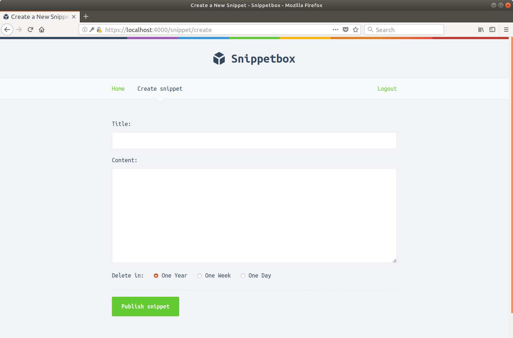

В этой книге мы будем создавать веб-приложение под названием Snippetbox, которое позволяет людям вставлять фрагменты текста и делиться ими — что-то вроде Pastebin или GistHub. Ближе к концу сборки это будет выглядеть примерно так:

Наше приложение будет очень простым, всего с одной веб-страницей. Затем с каждой главой мы будем создавать ее шаг за шагом, пока пользователь не сможет сохранять и просматривать фрагменты через приложение. Это познакомит нас с такими темами, как структурирование проекта, маршрутизация запросов, работа с базой данных, обработка форм и безопасное отображение динамических данных.
Позже в книге мы добавим учетные записи пользователей и ограничим приложение, чтобы только зарегистрированные пользователи могли создавать фрагменты. Это познакомит нас с более сложными темами, такими как настройка HTTPS-сервера, управление сеансами, аутентификация пользователей и промежуточное программное обеспечение.
Эта книга предназначена для людей, которые плохо знакомы с Go, но вы, вероятно, найдете ее более приятно, если вы сначала имеете общее представление о синтаксисе Go. Если вы обнаружите, что боретесь с синтаксисом, «Little Book of Go» Карла Сегина — это фантастический учебник, или, если вы хотите что-то более интерактивное, я рекомендую пройти «Tour of Go».
Я также предположил, что у вас есть (очень) базовое понимание HTML/CSS и SQL и некоторое знакомство с использованием вашего терминала (или командной строки для пользователей Windows). Если вы уже создавали веб-приложение на каком-либо другом языке — будь то Ruby, Python, PHP или C# — эта книга должна вам подойти.
Что касается программного обеспечения, вам потребуется работающая установка Go (версия 1.20), текстовый редактор и веб-браузер.
Мы также будем использовать Curl в нескольких местах книги для проверки ответов, отправляемых нашим приложением. Curl должен быть предварительно установлен на большинстве компьютеров Mac, а пользователи Linux/Unix должны найти его в своих репозиториях пакетов как curl. Пользователи Windows могут загрузить его.
В этой книге блоки кода показаны на серебряном фоне, как показано ниже. Если код слишком длинный, нерелевантные части могут быть заменены многоточием. Чтобы упростить процесс, большинство блоков кода также имеют строку заголовка вверху, указывающую имя файла, над которым мы работаем.
File: hello.go
package main
... // Указывает, что некоторый существующий код опущен.
func sayHello() {
fmt.Println("Hello world!")
}Подсказка: если вы следите за сборкой приложения, я рекомендую использовать HTML- версию этой книги вместо PDF или EPUB. HTML-версия работает во всех браузерах, и правильное форматирование блоков кода сохраняется, если вы хотите скопировать и вставить код прямо из книги.
Инструкции терминала (командной строки) отображаются на черном фоне и начинаются с символа доллара. Эти команды должны работать в любой операционной системе на основе Unix, включая Mac OSX и Linux. Пример вывода отображается серебристым цветом под командой, например:
$ echo "Hello world!"
Hello world!Если вы используете Windows, вы должны заменить эту команду эквивалентной для DOS или выполнить действие через обычный графический интерфейс Windows.
Некоторые главы этой книги заканчиваются разделом с дополнительной информацией. Эти разделы содержат информацию, которая не имеет отношения к нашей сборке приложения, но все же важна (а иногда просто интересна) для ознакомления. Если вы новичок в Go, вы можете пропустить эти части и вернуться к ним позже.